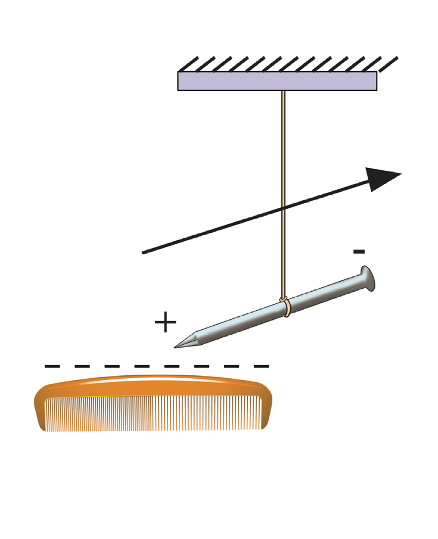

When the plastic comb is rubbed with cotton, it becomes negatively charged. When the comb is placed near the iron nail, the conduction electrons at the end of the iron nail near the negative charge on the comb are repelled and move to the opposite end of the iron nail. This leaves an excess positive charge at the end near the comb. The positive charges on the iron nail then attract the negative charges from the comb. Further observation reveals that the iron nail is slightly pulled towards the comb, as shown in Figure 1.15.

On the other hand, rubbing the glass rod with cotton causes it to acquire a positive charge. When the rod is brought close to an iron nail, the conduction electrons from the iron nail are attracted by the positive charge of the rod and move to the end of the iron nail near the glass rod. This movement results in an excess of positive charge at the opposite end of the iron nail. As a result, the iron nail is pulled slightly towards the glass rod, as shown in Figure 1.16.